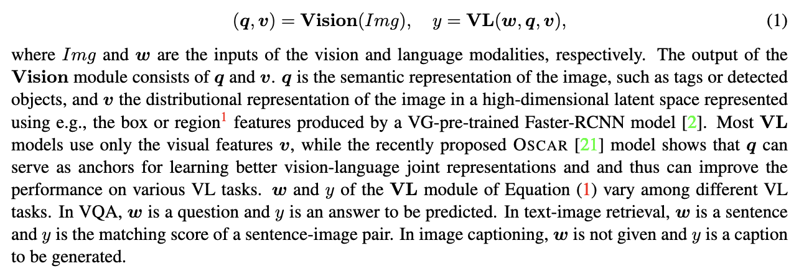

[TOC]
- Title: VinVL: Revisiting Visual Representations in Vision Language Models
- Author: Pengchuan Zhang et. al.
- Publish Year: 10 Mar 2021
- Review Date: Sat, Sep 3, 2022
Summary of paper
Motivation
-
In our experiments we feed the visual features generated by the new object detection model into a Transformer-based VL fusion model Oscar.
-
And utilise an improved approach OSCAR + to pretrain the VL model
Contribution
- has a bigger Object Detection model with larger amount of training data, called “ResNeXt-152 C4”
Some key terms
Vision Language Pretraining
- it often consists of two stages
- an object detection model is pre-trained to encode an image and the visual objects in the image to feature vectors, and
- a cross-modal fusion model is pre-trained to blend text and visual features.
- this paper focuses on improving the object-centric visual representations and present a comprehensive empirical study to demonstrate that visual features matter in VL model.
Vision Language models typically consists of two modules
- Deep learning-based VL models typically consists of two modules:
- an image understanding module Vision
- and a cross-modal understanding module VL

Training object detection module
- enhance visual concepts of tail classes, we perform class-aware sampling to get at least 2000 instances per class.
- balance the contribution of each dataset
- Unify the object vocabularies
- in the end they obtained 1848 classes
- C4 object detection architecture is better than FPN architecture
OSCAR+ pretraining method $$ \mathcal{L}{\text{Pre-training}} = \mathcal{L}{\text{MTL}} + \mathcal{L}_{\text{CL3}} $$
- MTL is the masked Token loss by masking text and tag tokens by 15% probability.
- CL3 takes into account two types of training sample x: the
- {caption, image-tags, image-features} triplets of the image captioning and image tagging data, and the {question, answer, image-features} triplets of the VQA data
- contains 50% matched triples, 25% w-polluted triples, and 25% q- polluted triples.
- Result
- the proposed 3-way contrastive loss transfers well to both tasks. (text-image retrieval task and VQA task)
Good things about the paper (one paragraph)
Github Page: https://github.com/pzzhang/VinVL
Potential future work
transfer the triplet loss to our work